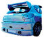

De: La Frikipedia, la enciclopedia extremadamente seria.
De: La Frikipedia, la enciclopedia extremadamente seria. De: La Frikipedia, la enciclopedia extremadamente seria.
| De la serie Bleach: | |||
| Zommari Leroux | |||
| |||
| Origen | El quadrilatero tras enfrentarse a Chuck Norris | ||
| Raza | | ||
| Reiatsu | Éxtasis | ||
| Técnica favorita | Os traigo paz, os traigo amor | ||
| Malo o Bueno | Malo, y todos le odian | ||
| Objetivo | Que todos le quieran | ||
| Notas | Es hippie | ||
«¡Acepta mi amor! ¡Acéptalo! ¡Acéptalo!»
~ Zommari Lerroux declarándose a Byakuya.
«Te mataré porque levantaste tu espada contra mi orgullo.»
~ El pijo antes mencionado matando a Lerroux por creerle maricón.
Zommari es el hollow de Mike tyson, pero a diferencia de cuando estaba vivo, va siempre hasta las trancas de éxtasis. No, espera, es igual a cuando estaba vivo. Es mas feo que pegarle a un padre con un calcetín sudao, y va con una... ¿cresta? ¿pinchitos? de color verde. Es el séptima espada, aunque es realmente mierdoso débil en el cuerpo a cuerpo. Quiere tambien que lo mimen.
|  | SPOILERS. |
Este personaje aparece muy poco en la serie (gracias a Chuck el monstruo del espaguetti volador) Puesto que viene el pijazo de Byakuya y se lo come con patatas.
El caso es que está Rukia derrotada, al borde de la muerte por sobredosis Cuando llega Zommari, y se dispone a rematarla. Entonces llega Byakuya, y le pregunta si iba a matarla, el conguito gigante responde afirmativamente y empiezan a pelear vacilando de a ver quien se ha metido mas droga, para ver quien vé mas doble. Gana el pijote (de la mancha) de Byakuya, porque ha bebido mas (recordemos: es un pijo). Entonces Zommari hace una contorsión estúpida y se convierte en un truñazo rosa y un castigo para la vista su liberación, "Brujería" o "Bhujerba", para los frikis de Final Fantasy XII (12 para los catetos).
Consiste en un boñigo rosa con caras y ojos, que, a causa del éxtasis, va prodigando "Amor" por todo el mundo, y a quien mira, tambien le contagia el éxtasis y puede controlarlo. Se le dilatan las pupilas de una forma exagerada, está al borde de morir de sobredosis. Empieza mirando a la pierna de Byakuya, haciendo que se acerque al truño rosa pero Byakuya ve la marca que le deja el "amor" y exclama: "¡AAAAAAAH, UN BICHO!!" y se corta la pierna ("¬¬'"). Zommari le sigue prodigando "amor" pero esta vez en el brazo, y cuando se dispone a ahogarse, vuelva ver la marca, se asusta y corta.
Finalmente Zommari enamora a Rukia, que estaba casi cadaver por ahí, y la usa para atacar a Hanataro, que se había acoplado del palo. Luego el oscurito rosa le dice a Byakuya que suelte la espada, este la suelta, haciendo un bakudou de esos a rukia, y luego saca el bankai y rebienta al espada. Pero recordemos que este era Mike tyson en el pasado, y no es tan facil de derrotar bueno, en realidad si. Zommari se había convertido en pelota y protegido del ataque. Si, es tan patético como suena. Luego Zommari va a usar todo su "amor" con Byakuya pero este crea una barrera (aAaAah casa casa en casa no puedes pillarme) y despues de que Zommari pide piedad y le suelte una mierda de discurso final, Byakuya le pega un tajo y Zommari peta. Muere. Se finí.
| | |
|
Personajes
Shinigamis de alto Rango
Malos
Vizards
Otros
|
Autor(es):